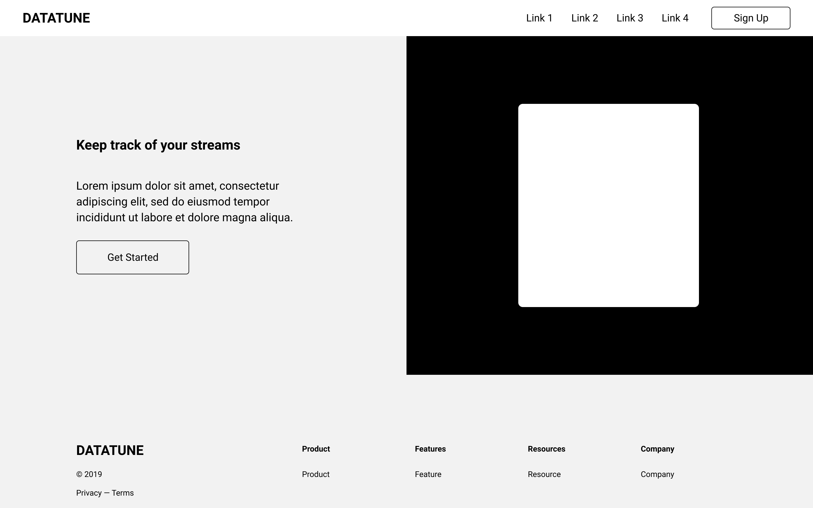
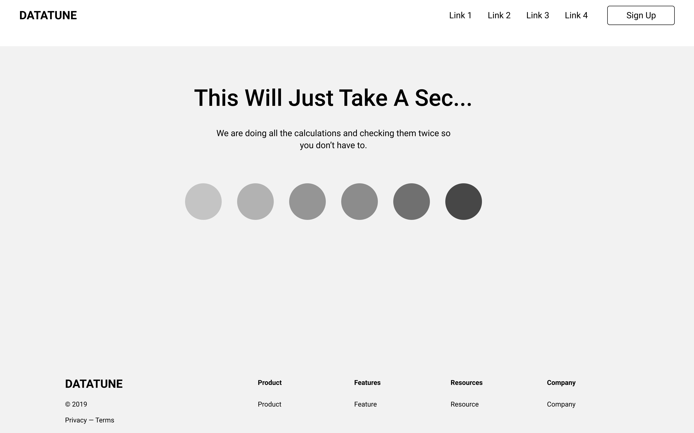
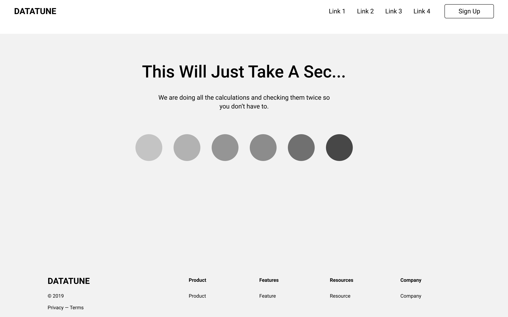

Datatune App
Giving musicians control over their streaming revenue.
Project Overview
- My Roles: Interaction Design, Visual Design
- Platform: Mobile and Desktop
- Time Frame: 4 Weeks
- Tools: Paper Prototypes, Figma
The Problem
Income from streaming music varies greatly from platform to platform, making it difficult for musicians to understand where they may make the most money from and how much energy they should put into promotion on certain platforms.
The Data

One benefit from using previously sourced data is that the problem space has already been identified. This makes targeting potential user groups much simpler, allowing me to move through the research process at a faster pace.
The Process
- Interview musicians to find information about their relationship with streaming platforms
- Ideate based on research
- Develop and test wireframes
- Iteration and prototype testing
User Research
- Interviewees: 4
- Requirements: Musicians who earn any amount of money from streaming revenue
I conducted exploratory interviews with active musicians from across the United States in order to form an acurate persona to design for.
User Insights
“I’m always surprised when the direct deposit comes in ‘cause I forget about it”
- Musician A
“It’s really hard to know how much money will be coming in each quarter from streaming”
- Musician B
After synthesizing my research it was obvious there were consistent pain-points for users across the board. Since streaming revenue can come from a number of sources, users found it difficult to keep track of where their money came from and when they would have access to it.
User Persona and Scenario

Bryndon is a drummer who makes his living from touring and playing on records. The Publishing Rights Organization (PRO) that represents Bryndon pays out his streaming royalties quarterly, though he has no way of anticipating how much to expect. Since Bryndon is often on tour he needs a way to anticipate his quarterly income from streaming royalties while on the go and would appreciate an interface that made it easy for him to quickly understand where his income was coming from.
Wireframes
Due to the limited timeline I had in this project I moved directly from research into wireframeing.
 


Design Retrospective
I believe the user's goals are being achieved with this design, but it is not the most mobile friendly execution. My thinking is that there would be an application for users to monitor streaming activity, but the uploading of data would be handled on the website.
When moving onto high fidelity comps I decided to focus on the mobile experience since it was more inline with the user scenario. The prototyped user flow depicts a new user entering data and viewing their synthesized data once it has finished processing. The user may then sign up for the service to save this information to their profile.